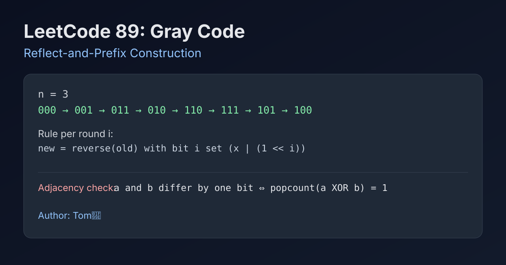

LeetCode 89: Gray Code (Reflect-and-Prefix Construction)
LeetCode 89Bit ManipulationSequence ConstructionToday we solve LeetCode 89 - Gray Code.
Source: https://leetcode.com/problems/gray-code/

English
Problem Summary
Given an integer n, generate a Gray code sequence of length 2^n where adjacent values differ by exactly one bit, and the first value is 0.
Key Insight
Use the reflect-and-prefix rule. Start from [0]. For bit position i, traverse the current list in reverse and append each value with bit i set. This keeps one-bit adjacency across old/new boundaries.
Brute Force and Limitations
Brute force backtracking can try all permutations of 0..2^n-1 and enforce one-bit adjacency using XOR bit-count checks. It works for small n but is combinatorial and unnecessary.
Optimal Algorithm Steps (Reflect and Prefix)
1) Initialize result with [0].
2) For each bit i from 0 to n-1:
3) Let add = 1 << i.
4) Iterate existing result in reverse order, append result[j] | add.
5) Return result after finishing all bits.
Complexity Analysis
Time: O(2^n).
Space: O(2^n).
Common Pitfalls
- Iterating forward instead of reverse breaks one-bit adjacency.
- Using + with wrong bit mask calculation; prefer | or guaranteed distinct bit addition.
- Returning fewer than 2^n elements.
- Forgetting edge case n = 0 (answer is [0]).
Reference Implementations (Java / Go / C++ / Python / JavaScript)
class Solution {
public List<Integer> grayCode(int n) {
List<Integer> res = new ArrayList<>();
res.add(0);
for (int i = 0; i < n; i++) {
int add = 1 << i;
for (int j = res.size() - 1; j >= 0; j--) {
res.add(res.get(j) | add);
}
}
return res;
}
}func grayCode(n int) []int {
res := []int{0}
for i := 0; i < n; i++ {
add := 1 << i
for j := len(res) - 1; j >= 0; j-- {
res = append(res, res[j]|add)
}
}
return res
}class Solution {
public:
vector<int> grayCode(int n) {
vector<int> res{0};
for (int i = 0; i < n; ++i) {
int add = 1 << i;
for (int j = (int)res.size() - 1; j >= 0; --j) {
res.push_back(res[j] | add);
}
}
return res;
}
};class Solution:
def grayCode(self, n: int) -> List[int]:
res = [0]
for i in range(n):
add = 1 << i
for x in reversed(res):
res.append(x | add)
return res/**
* @param {number} n
* @return {number[]}
*/
var grayCode = function(n) {
const res = [0];
for (let i = 0; i < n; i++) {
const add = 1 << i;
for (let j = res.length - 1; j >= 0; j--) {
res.push(res[j] | add);
}
}
return res;
};中文
题目概述
给定整数 n，生成长度为 2^n 的格雷码序列，要求相邻两个数二进制表示恰好只有 1 位不同，并且首元素为 0。
核心思路
使用镜像反射 + 前缀加位。从 [0] 开始，每一轮处理第 i 位时，逆序遍历当前序列，并给每个值加上该位（1 << i），再追加到末尾。
基线解法与不足
基线方案可用回溯枚举全排列，并用异或后“只含一位 1”判断相邻合法性。虽然可行，但复杂度接近阶乘级，远超题目需要。
最优算法步骤（镜像反射构造）
1）初始化 res = [0]。
2）对每一位 i = 0..n-1：
3）计算 add = 1 << i。
4）逆序遍历当前 res，追加 res[j] | add。
5）全部处理完后返回 res。
复杂度分析
时间复杂度：O(2^n)。
空间复杂度：O(2^n)。
常见陷阱
- 误用正序追加，会破坏相邻一位差的性质。
- 位运算掩码写错（例如移位位数错误）。
- 返回元素个数不足 2^n。
- 忽略 n=0 的边界（结果应为 [0]）。
多语言参考实现（Java / Go / C++ / Python / JavaScript）
class Solution {
public List<Integer> grayCode(int n) {
List<Integer> res = new ArrayList<>();
res.add(0);
for (int i = 0; i < n; i++) {
int add = 1 << i;
for (int j = res.size() - 1; j >= 0; j--) {
res.add(res.get(j) | add);
}
}
return res;
}
}func grayCode(n int) []int {
res := []int{0}
for i := 0; i < n; i++ {
add := 1 << i
for j := len(res) - 1; j >= 0; j-- {
res = append(res, res[j]|add)
}
}
return res
}class Solution {
public:
vector<int> grayCode(int n) {
vector<int> res{0};
for (int i = 0; i < n; ++i) {
int add = 1 << i;
for (int j = (int)res.size() - 1; j >= 0; --j) {
res.push_back(res[j] | add);
}
}
return res;
}
};class Solution:
def grayCode(self, n: int) -> List[int]:
res = [0]
for i in range(n):
add = 1 << i
for x in reversed(res):
res.append(x | add)
return res/**
* @param {number} n
* @return {number[]}
*/
var grayCode = function(n) {
const res = [0];
for (let i = 0; i < n; i++) {
const add = 1 << i;
for (let j = res.length - 1; j >= 0; j--) {
res.push(res[j] | add);
}
}
return res;
};
Comments